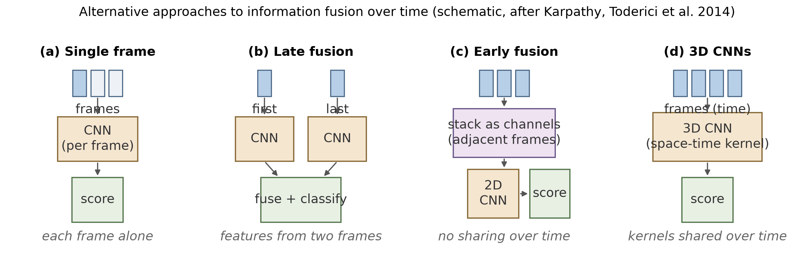
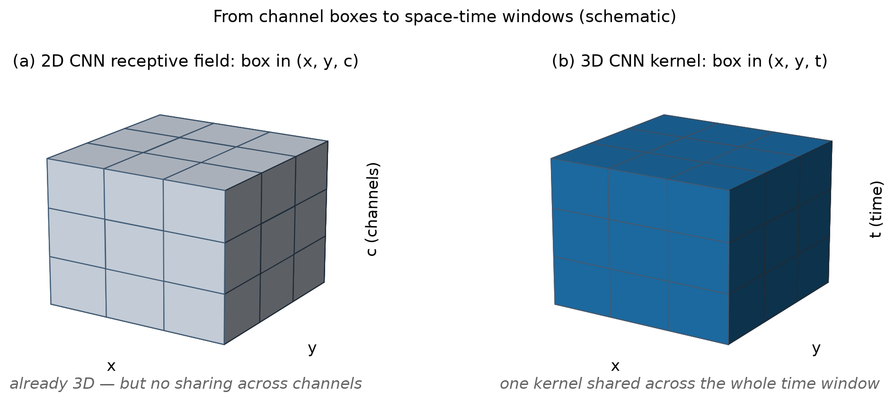
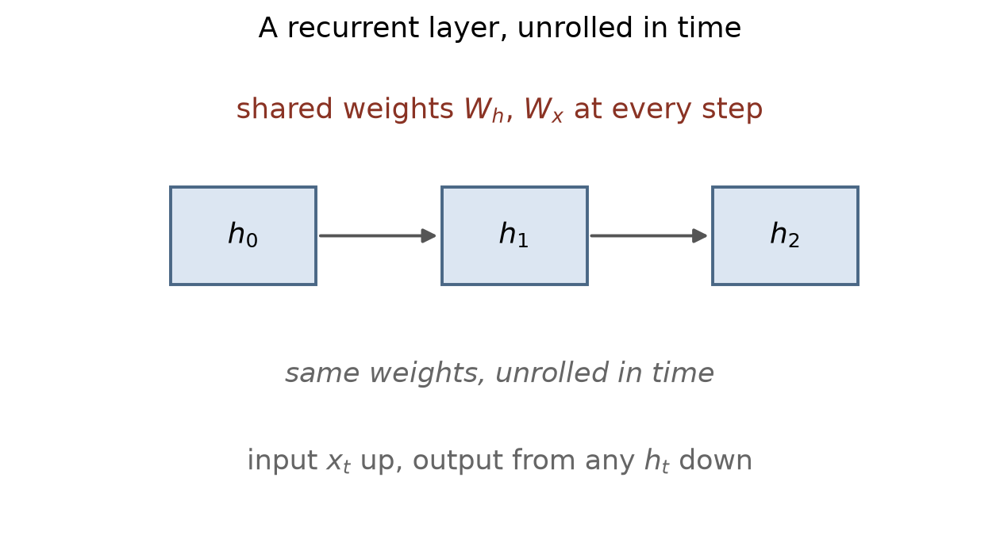
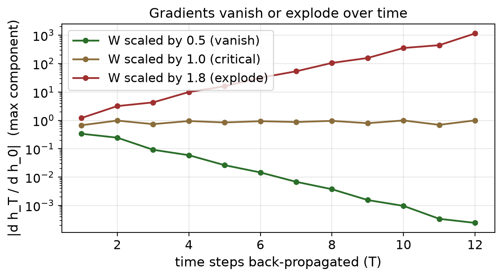

第 5 章 · 更复杂的模型
从二维走到三维
- 第一步，把卷积从二维平面搬到三维时空。
- 第二步，让网络沿着时间传信息。
- 三维数据：视频、占用地图、医学影像。
- 本集讲三维卷积与循环网络两小节。
依据：原书第 317 页
三维卷积 · 辨析与四种融合
通道不是时间，三维卷积另开一维
- 老网络的感受野，是长宽加通道的盒子。
- 通道是并列特征，不是空间。
- 三维卷积沿时间再开一维，同组核共享权重。
- 四种融合：单帧、晚融合、早融合、三维卷积。
依据：原书第 317–318 页

四种时序融合：单帧 / 晚融合 / 早融合 / 三维卷积｜程序生成，未用教材或论文原图
三维卷积 · C3D 与时空核
三乘三乘三的时空核
- C3D 用三乘三乘三的核加深网络。
- 效果更好，被称作三维卷积世界的 VGG。
- 二维换三维，参数只乘时间格数。
- 每帧独立配核，参数才乘帧数。
依据：原书第 318 页；本集实验

感受野盒子与时空窗：长宽加通道，对照长宽加时间｜程序生成，未用教材或论文原图
体积数据 · 提速
体素、医学影像与工程提速
- 3D ShapeNets 与 VoxNet 把物体切成体素。
- 医学影像用三维卷积分割病灶。
- 代价是计算和内存都很重。
- 慢快双流：慢路低帧率，快路高帧率。
依据：原书第 318–319 页
点云与网格 · 单图推三维
单图推三维：点云与网格
- 三条路：逐像素深度、体积密度、点云网格。
- 新近实验怀疑：可能只是认出类别。
- 点云研究很多，综述回顾两百多篇。
- Mesh R-CNN：检测骨干加两条三维支路。
依据：原书第 320 页
关键词
逐像素深度
体积密度重建
三角网格
PyTorch3D
循环网络 · 序列与展开
RNN：把上一刻喂给下一刻
- 序列数据：视频帧、音频、文本。
- 上一时刻的特征，喂给下一时刻。
- 展开图：同一层摊开成时间上的一串。
- 卷起来看和摊开看，是同一个网络。
依据：原书第 321 页

循环层展开：同组权重走时间串｜程序生成，未用教材或论文原图
梯度与门控
梯度会消失，也会爆炸
- 梯度沿时间回传，可能消失或爆炸。
- 权重缩半，十二步缩水四千多倍。
- 权重放大一点八倍，十二步放大一千多倍。
- 门控单元 GRU 与 LSTM 调节信息流。
依据：原书第 321–322 页；本集实验

梯度随回传步数衰减或爆炸（实验档实算，log 纵轴，线性化教学设定）｜程序生成，未用教材或论文原图
应用与 attention
用在哪儿：从视频到注意力
- 视频理解、语言建模、看图说话、视觉问答。
- 也能缝多视角，或做可训练的光流。
- RNN 的历史信息都挤在隐藏状态里。
- 注意力：查询对键，加权取值。
依据：原书第 322 页
attention
键与值：存一串
查询：按相似度对
自注意力：看历史
视觉注意力：看图
盘点 · 移交
两步走完：3D 卷积与 RNN
- 三维卷积：时空核、体素、点云、网格。
- 循环网络：共享权重、梯度问题、门控。
- 深学去看教科书第八到第十章。
- 下一集：Transformer 与视觉 Transformer。
依据：原书第 322 页